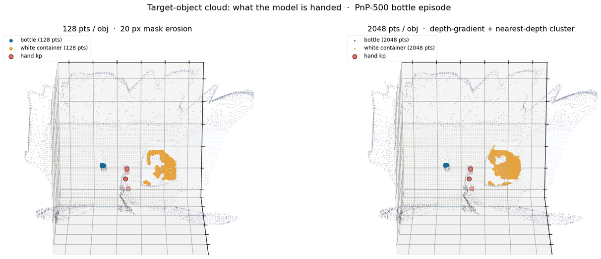

01Result
Same objects, seed, IK and start pose as every other run in this campaign. DPP is the reproducible baseline (the README's "70%" was retired last log).
| Run | success_at_end | wrist displacement / chunk | conditioning |
|---|---|---|---|
| Object-cloud 128 pts | 0/24 | 3.24 cm mean · 8.26 max | verified ON |
| Reach-only baseline | 0/24 | 4.04 cm mean · 6.92 max | none |
- ✓Conditioning was genuinely live, not silently off.The eval log prints
[pwam-obj] object cloud (24, 2, 128, 3) (camera frame, slots [manip, container])— 24 envs × 2 object slots. This check existed because the model gates conditioning on the key being present, so a wiring slip would have produced a silently unconditioned run that looked like a null result. - ✗No effect on the grasp.0/24, and the reach is within noise of the baseline (3.2 vs 4.0 cm per chunk — same order, no collapse and no gain).
02What was built
The gap was real: DPP gets per-object segmented clouds in dedicated slots, Dex-PointWAM saw only the full scene. Closing it touched data, model, and both sides of the deploy path.
| Layer | Change |
|---|---|
| Data | object_points (M=4,P,3) + object_mask + object_names written into the PnP-500 WDS (479 eps, 3634 train / 230 test clips) |
| Model | per-object PointNet → object tokens appended to the DiT self-attention set (masked for empty slots); names via the existing frozen CLIP encoder |
| Checkpoint | partial load — 26 new object params keep their init, everything else loads |
| Sim | reuses DPP's ObsAssembler (mesh-sample + live Isaac pose + occlusion) → camera-frame clouds into the obs |
| Bridge | lifts object clouds with the same E_c2w and re-centers by the same shift as the scene cloud |
Language was left untouched — it was already there (frozen CLIP text tower into DiT cross-attention), so object names reuse it and add no new language weights.
03A denser, better-filtered cloud
128 pts/obj is what the DPP preprocessing happened to store. The masks are full-res (720×1280, 6–8 k px on the bottle, 28–75 k on the container), so a 16× denser cloud is real information, not duplicated points — and the old 20 px mask erosion could be dropped for the BMW-style depth-gradient filter.

Two attempts failed before the method held up — both caught by measuring against the trusted 128-pt cloud rather than by eyeballing:
- ✗Depth gradient alone (10 mm) leaks the background.14% of bottle points landed in a tight cluster ~18 cm behind the object: mask spill onto the table, whose surface is locally smooth so the gradient test passes it. The 20 px erosion had been hiding this by discarding the object's outer shell too.
- ✗"Keep the largest connected component" made it worse.Stereo depth has holes on the object, so the gradient-cleaned mask fragments; the largest fragment was a 1430 px flat table patch, beating the bottle's 1116 px. It selected the table and reported a confident 2.3 cm "object".
- ✓Nearest significant depth cluster.An object always sits in front of whatever it occludes, so it is the nearest depth mode. 1 cm histogram bins, gaps ≤3 cm merged (one curved surface stays one cluster), first cluster holding ≥10% of pixels wins. No erosion at all — the object interior is kept in full.
| Validation vs the trusted 128-pt cloud | Result |
|---|---|
| Depth of the selected surface | Δ 0.0–0.3 cm across frames and objects |
| Background spill (>10 cm from the core) | 0.0% |
| Distinct points per object | bottle 880–2048 · container 2048 |
| Coverage | 479/479 episodes, 0 skipped, all (frame, slot) pairs filled |
04What this rules out
- ✓Not a missing-object-input problem.The model now receives the same class of input DPP does — segmented, identity-tagged, co-registered — and still fails at the same point.
- ✓Not a language gap.Instruction conditioning was already present; DPP's own text embedding is a sentence encoder, not an LLM.
- ·Point density: still open.128 pts is sparse for a grasp-relevant surface. The 2048-pt run answers whether density was the limit; if it also lands at 0/24, density is excluded and the palm-up failure is squarely a learned-prior problem, not an observation problem.
05Next
- ·2048-pt finetune (running, job 48613).Same recipe, 16× denser clouds from the depth-gradient extraction. Then sim eval on bottle · N=24.
- ·Sim-side density parity.The eval path FPS-downsamples object clouds to 128 (
batched_to_128_cam); a 2048 variant is needed so the 2048 checkpoint is evaluated on what it was trained on. - ·If 2048 also fails.Then the lever is the grasp prior itself — domain-randomised real training, a grasp-orientation loss, or in-domain sim demos — not the observation.
06Artifacts & repro
- ·Checkpoint (128)/rlwrld-unified-checkpoints/beomjun/dexpointwam/objcloud_ft/model-best.pt · test/robot_l2_moved 0.0381
- ·2048 cloudspnp500_obj2048/rlwrld_obj2048.h5 (2.3 GB) · extract_rlwrld/regen_object_points_2048_grad.py
- ·Datasetswds_pnp500_fullscene_obj (128) · wds_pnp500_fullscene_obj2048 (2048)
- ·LaunchersPointWAM/run_ft_objcloud.sbatch (PWAM_DATA, PWAM_OBJ_PTS) · openarm-sim/scripts/eval_pointwam_rlwrld.sbatch (PWAM_OBJ_COND=1)
- ·Plan & architecture2026-07-29 · object-cloud-conditioning
sbatch --export=ALL,MODEL_OUTPUT_DIR=…/objcloud_ft2048,PWAM_DATA=pnp500_fullscene_obj2048,PWAM_OBJ_PTS=2048 run_ft_objcloud.sbatch
sbatch --export=ALL,MODEL_OUTPUT_DIR=…/eval_objcloud128,PWAM_CKPT=…/objcloud_ft/model-best.pt,PWAM_OBJ_COND=1 scripts/eval_pointwam_rlwrld.sbatch bottle 24 24 1200